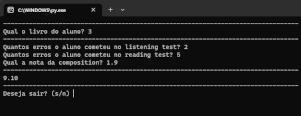

Meus Projetos
Aqui tenho alguns pequenos projetos que criei para me ajudar no trabalho ou para praticar
Clique sobre a imagem para abrir o repositório do GitHub
|  |
Corretor de ProvasAqui está um código em Python para ajudar na correção das provas dos meus alunos de inglês. É um código simples para calcular a nota de acordo com o número de erros que o aluno cometeu em cada parte da prova junto com a nota da redação |
Páginas InfluxAqui temos algumas páginas em HTML, CSS E JavaScript que também utilizei para ajudar no meu trabalho. Porém aqui algumas outras funções foram adicionadas como correção da redação, lista do que fazer nas aulas comunicativas e que materias preciso levar para a aula semi-vip de acordo com cada aula e livro. |
|
Jogo da velhaJogo da velha feito em JavaScript, HTML e CSS |
|
Página AndroidEste é um projeto do Curso em vídeo em que fizemos uma página web usando HTML e CSS puros sobre a história do Android.A página pode ser acessada Aqui. |